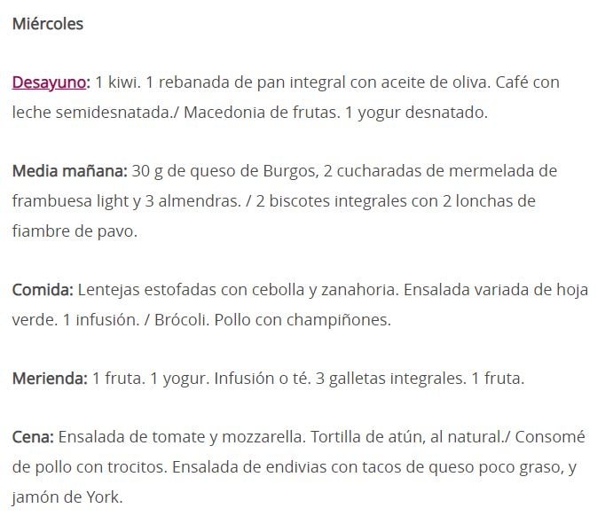
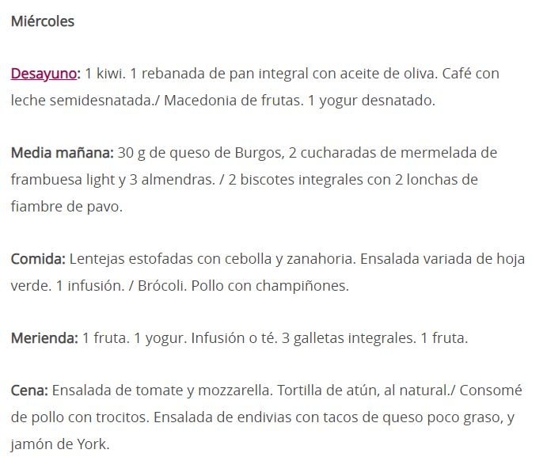
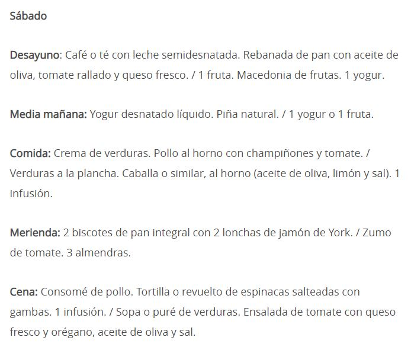
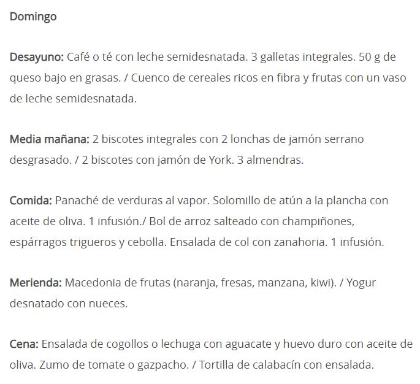
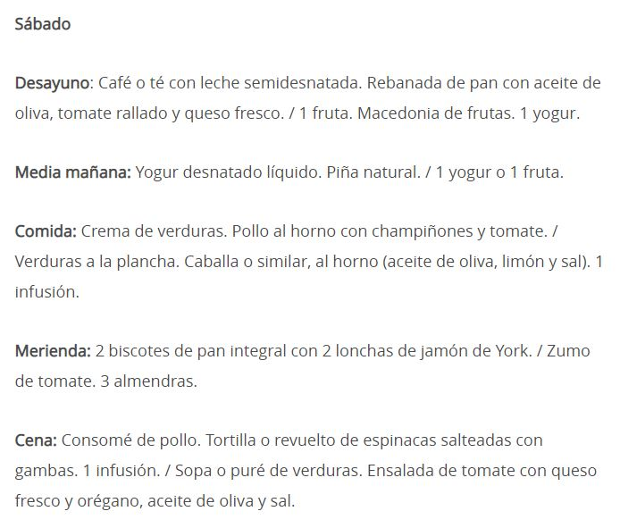
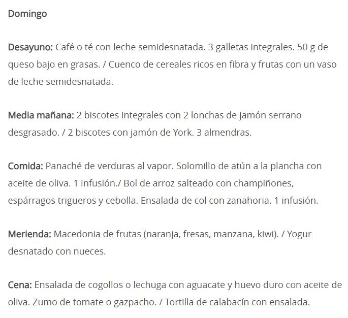

La dieta hipocalórica es un régimen alimenticio en el que se restringe la ingesta calórica. En otras palabras, es una dieta en la que el consumo de calorías se reduce bruscamente, aportando al cuerpo menos energía de la que se considera recomendable para cubrir los gastos energéticos. De este modo, el cuerpo empieza a echar mano de las reservas de grasa. Puede aplicarse a veces para bajar rápidamente de peso, pero tiene el problema del efecto rebote, por lo que sus efectos no suelen perdurar. Desde aquí, nosotros recomendamos que antes de restringir el aporte calórico, se siga una alimentación más saludable junto con la práctica de deporte. Esta es la manera más saludable de bajar eficazmente de peso.

 


 


